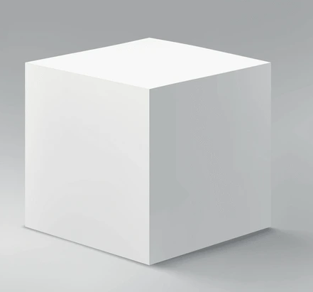
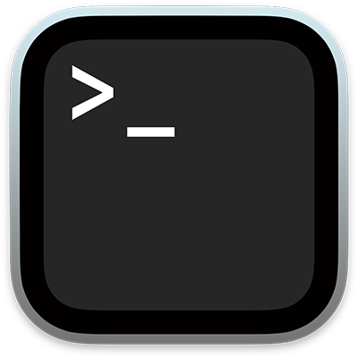
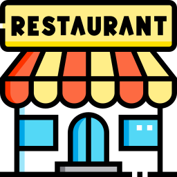
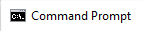
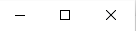

Stream Simulator
A streaming simulator that lets you role-play as a streamer with any audience size.
 My name is Khoa Xuan Nguyen
My name is Khoa Xuan Nguyen
This website provides an overview of my background and showcases all the projects I have created. Unless otherwise specified, most of these projects were developed using vanilla JavaScript, without the use of any frameworks or library.
It has been a while since I last posted a project. I recently moved back to Vietnam for more opportunities and am currently working as a developer at a small-sized company. I’ve been handling various projects and tasks, and I’m actively working on them. I’ll be sharing updates soon.
All of my projects up to Streaming Simulator were completely hand-coded without any AI assistance. However, I’ve come to realize that avoiding AI entirely would be like handicapping myself. So from this point onward, many of my upcoming and future projects will heavily involve AI-assisted coding. Of course, my coding knowledge and fundamentals will still be applied wherever necessary and won’t go to waste.





Microsoft Windows [Version 10.5.18071.1703]
(c) Microsoft Corporation. All rights reserved.
C:\Users\vuila9>whoami
It all started with a passion for computer science because I love coding. While I initially enjoyed math and physics, I found them too dry to pursue professionally. My interest in coding began in high school when I was unsure about which course to study. As I explored coding further, my love for it grew. Eventually, I realized that being good at math actually complements computer science, and I finally discovered my career path.
My diligent efforts during university were rewarded when I secured an internship at BlackBerry QNX. During my time there, I gained invaluable insights into the realities of a professional environment, particularly in software development and engineering roles. Additionally, I had the opportunity to engage in various social aspects, including team meetings, discussions, and assuming responsibilities. The knowledge and experiences I acquired during this internship were beyond the scope of classroom learning.
After the internship, I returned to complete my university studies at Carleton. Although the job search turned out to be more challenging than I anticipated, I made the decision to regroup and invest in my personal growth. After reassessing my situation, I recognized that my lack of experience was a significant factor. Consequently, I have concentrated on enhancing my professional skills by creating numerous small to medium-sized projects.
I traveled to Canada in June 2017 to study abroad. Started in Grade 11 at Glebe CI, Ottawa. I then went to Carleton University for 4.5 years of study. Lived and worked for another 2 years. February 2026, my journey here finally concluded, and I decided it was a good time to go home, in Vietnam.
You can reach out to me at my working email address: johnxnguyenwork@gmail.com
More can be found at the bottom of this website ↓
C:\Users\vuila9>_